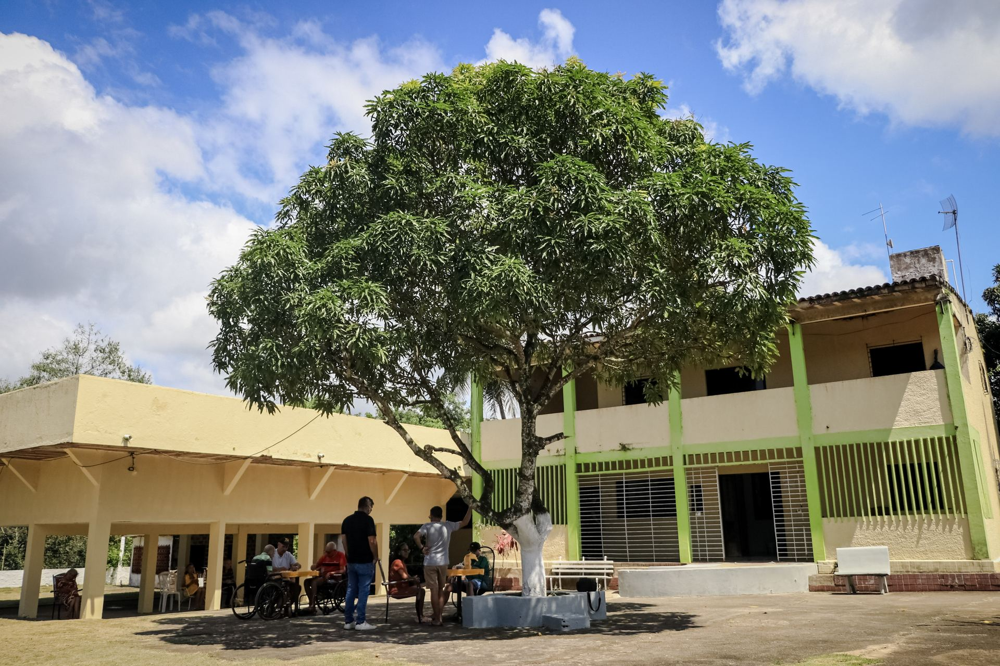
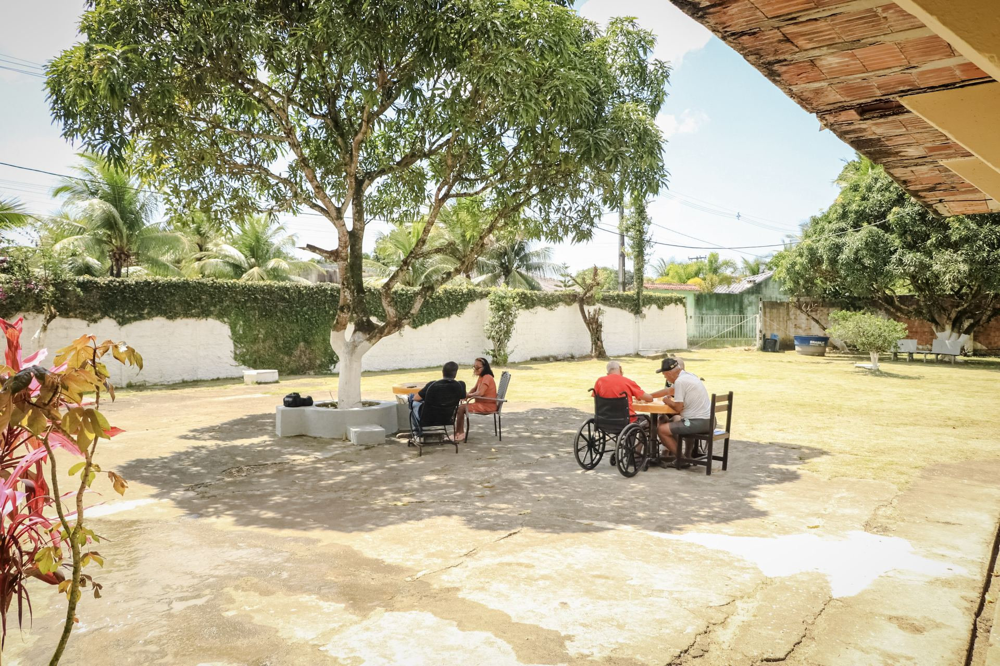
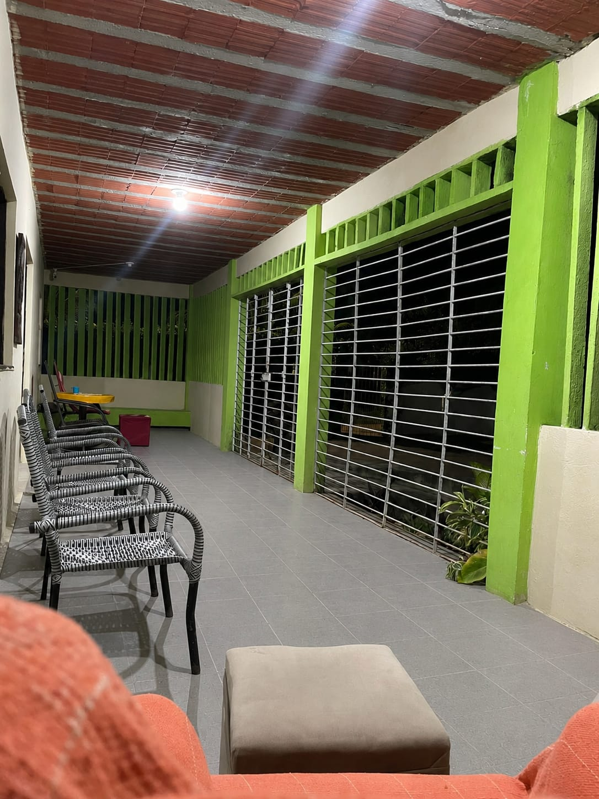

Um lugar para envelhecer com companhia, cuidado e leveza.
Equipe presente 24 horas, acompanhamento médico regular e uma rotina pensada para que cada morador tenha seus dias com dignidade — e sua família, tranquilidade.
Cuidado contínuo, do jeito que a família faria.
Equipe 24 horas
Cuidadores e técnicos de enfermagem de plantão dia e noite, prontos para o que for preciso.
Acompanhamento médico
Visitas regulares de geriatra e presença semanal de enfermeiro para acompanhar de perto a saúde de cada morador.
Alimentação completa
Seis refeições diárias, com cardápio adaptado pela nutricionista às necessidades de cada pessoa.
Casa, não instituição
Pátio arborizado, varandas e espaços de convivência onde os moradores jogam, conversam e tomam sol todos os dias.

Todos os dias, o pátio se enche de conversa, dominó e sombra de mangueira.
Cuidar de quem envelhece é cuidar também de quem ama.
Sabemos que a decisão de procurar uma pousada geriátrica nunca é simples. Por isso, mantemos a família por perto — com informação clara sobre a rotina, a saúde e o bem-estar de cada morador — e cuidamos dos pequenos detalhes do dia a dia: da cama arrumada à companhia na hora do lanche da tarde.
Ver todos os serviços
Venha conhecer a Aquarela de perto.
A melhor forma de sentir se é o lugar certo é visitando pessoalmente. Fale com a gente e agende uma visita.